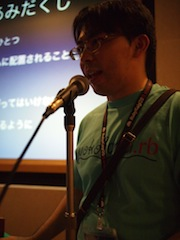
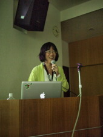
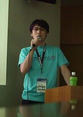

RegionalRubyKaigi レポート (29) みなと Ruby 会議 01
横浜ではじめての地域 Ruby 会議「みなと Ruby 会議 01」が 2012 年 6 月 2 日に開催されました。 森に囲まれた自然豊かな会場で、参加者のみなさんからは「みなとっぽくない」と大きな反響をいただきました。
RegionalRubyKaigi レポート みなと Ruby 会議 01
開催概要
開催日
2012 年 6 月 2 日 (土) 12:30 - 17:30
開催場所
神奈川県立公文書館 (神奈川県横浜市旭区中尾 1-6-1)
開催母体
yokohama.rb
参加者
およそ 100 名
公式ページ
公式ハッシュタグ
#minatork01
ソーシャルコーディング (書いた人: joker1007)
: 
ソーシャルコーディングと題して、参加者の皆さんに実際にコードを書いてもらうセッションが行われました。スタッフが考えたお題に参加者同士のペアプロで挑戦する形式です。ちなみに、今回の参加者の内、ペアプロ経験があるのは 3 割程でした。
みなと Ruby 会議のスタッフからのお題は 2 問。制限時間は 60 分。
問 1 あみだくじの作成
コマンドラインで実行すると、端末の標準出力にあみだくじを表示する
条件:
1. 当たりの数はひとつでランダムで結果の場所が変わる
2. 横線はランダムで配置が変わる
3. 横線の数は > 0
4. 横線が横に連続しないように。
5. 人数が変えられるように (縦棒の数を変えられるようにする) 。 問 2 English Number
コマンドラインで実行すると、引数として与えた数字を英語に変換し出力する
条件:
1. 0-9999 まで対応すること
2. 表記揺れは気にしないペアプロ未経験の方のために「ドライバー (コードの書き手) は頻繁に交代する」「積極的に考えていることを話してコミュニケーションを取る」等、簡単な心得について解説があった後、自己紹介 & ペア決めタイムです。どちらの問題からやりたいか、使ってるエディタが一致するかなど、各テーブルで自由にペアを決めていき、奇数になってしまうところはスタッフが参加する形でペアを作っていきました。
- また、プログラマでは無い方のために、前方のスクリーンで挑戦してくれるペアを募集したところ、yokoken さん、r7kamura さんのペアに立候補していただきました (お二方には、後程 Ruby 関連の T シャツがプレゼントされました) 。

限られた時間で問題を解くという行為は結構熱くなってしまうのか、今回参加してくれた皆さんも、真剣な表情で課題に臨んでいました。今回、この企画を実施して非常に良かった点は、参加者同士がしっかり自己紹介して、お互いにコミュニケーションを取れたことです。続くトーキングセッションの前のアイスブレイクとしても最適だったのではないでしょうか。
最後は、お互いのコードをレビューしあい、工夫した点や、書き方などを教えあう時間がありました。その中で、英語変換の問に対して、いくつか独創的な解答方法があったのでご紹介したいと思います。
- グーグル翻訳に投げて、出力結果を取得し表示する
- Mac の say コマンドを呼び出して発音させる。文字列化は iOS の Siri で。
その他にも、変換テーブルの作り方に各々工夫があったり、テストコードまでしっかり書いているペアがいたり、と様々なコードが見られる貴重な機会でした (前のスクリーンで参加してくれた、yokoken さん、r7kamura さんペアは 2 問とも解答していました。凄い！) 。
最終的なアウトプットは、Gist や Github へのアップロードが推奨されていたので、みなと Ruby 会議の関連ツイートやブログから多くのコードが見られると思います。
つじたさとみさん:「yokohama.rb と minami.rb のおいしい関係」 (書いた人: miyohide)
- 大阪の地域コミュニティ minami.rb のファウンダーであるつじたさとみさんによる yokohama.rb と minami.rb の紹介と、ご自身が Ruby / Ruby on Rails を使った開発を続ける理由をお話しいただきました。
姉妹地域 Ruby コミュニティの関係を結んでいる yokohama.rb と minami.rb 。始まりはその場のノリで決めた姉妹地域 Ruby コミュニティの関係ですが、伊豆での Rails Hackathon 開催や、それぞれの地域コミュニティ参加者の交流など継続的かつ活発な活動が行われています。 また、食い倒れの街・大阪での地域 Ruby コミュニティはおいしい食べ物、飲み物とは切っても切り離せないとのことで、 minami.rb から yokohama.rb に対して日本酒 2 本の贈呈が行われました。
yokohama.rb と minami.rb とのおいしい関係の紹介が終わった後は、つじたさんによる Ruby / Ruby on Rails を続ける理由が話されました。つじたさんは本業では Ruby / Ruby on Rails を使った開発を行っていないとのこと。そのようなつじたさんが Ruby / Ruby on Rails を使った開発を行われている理由として、
- そこへ行かないとわからない
- 自分の手で作らないとわからない
- 作品を公開しないとわからない
の 3 点を上げられました。
Ruby コミュニティが持つ懐の深さと、初心者から楽しさが分かる Ruby の楽しさをコミュニティを通じて体感し、自分でものを作って公開する。「体感 + 五感で Rails と遊ぶ」ということを強くお話されました。
- さらに、「体感 + 五感で Rails と遊ぶ」の一環として、11 月に Okinawa.rb との Rails Hackathon Okinawa の開催もアナウンス。Okinawa.rb の @yasulab さんによる飛び入り説明がありました。

発表全体として、地域 Ruby コミュニティの広がりを感じさせる発表でした。
大場寧子さん:「ごきげん Rails」 (書いた人: hokkai7go)
: 
大場さんが Rails を使っていて、ごきげんになったことや Rails の魅力について話していただきました。まず、参加者のみなさんがどれだけ Rails で開発をしたことがあるか調査されていましたが、大半の参加者が Rails で開発をしたことがあるようでした。
大場さんは最近の Rails については、少し難しいと感じられているそうです。うまく動作させるまでに環境づくりが大変ですが、そこで負けずに頑張って使ってみてほしいとアドバイスがありました。
Rails の魅力について
開発中には時間をかけるべきことと、時間を節約したいことがあると思います (以下に箇条書きにしました) 。Rails を使うとどの作業で作業時間を節約でき、どの作業に時間をかけることができるかということを中心に Rails の持つ魅力について話していただきました。
- 時間をかけるべきこと
- 設計
- コミュニケーション
- テスト
- 時間を節約したいこと
- 定型的な作業
- モデルの作成
- コントローラの作成
- 定型的な作業
Rails では、コントローラの作成は、コマンドからひな形を生成して行いますが、生成されるコントローラのソースが、コントローラとして不足しておらず、また書き過ぎでもなくちょうどよいところが Rails の良さだとおっしゃっていました。
マイグレーションについての良さについてもお話していただきました。DB のスキーマを更新のたびに Ruby のコードして保存できるので、いつの間にかスキーマが変わっていたという事態を防ぐことができ、開発者みんなでスキーマの状態を共有することができます。
RSpec についても触れられ、テストコードがプロダクトコードの変更に耐えるためには、関心事にフォーカスすることが大事だとおっしゃられました。インスタンス変数の値を確認するなど、すべてを確認するのではなく、確認する項目たちをある一定のレイヤーに揃えるのがよいとのことでした。全部調べると、内部の変更に弱く、リファクタリングに弱いテストコードになってしまいます。
Rails の勉強法
最後に Rails の勉強法について話されました。興味のあるアプリを作ってみるのが一番で、作るものについては偏ってて OK、偏ってても興味を持って突き進むと、いつしかバランスがあってくるので、ぜひ頑張ってほしいとのことでした。
情報源として、Rails の書籍や Web サイトを紹介していただきました。
また、Rails の情報を探す際には、英語の情報を避けないでほしい。英語のまま頑張って読んでほしいとおっしゃってました。
近永智之さん:「怠惰な Rubyist への道 - Enumerator::Lazy の使いかた」 (書いた人: joker1007)
: 
Yokohama.rb から福岡に遠征中で、CRuby のコミッタでもある nagachika さんによる、Ruby 2.0 の新機能 Enumerator::Lazy についての発表です。現在開発中の Ruby 2.0 の機能という非常にホットな話題でありながらとても分かりやすい内容で、Ruby 熟練者にとっても非常に勉強になる話でした。
ちなみに Ruby 2.0 は Ruby 生誕 20 周年である、2013 年の 2 月にリリースされる予定です。
まずは Enumerable の解説から。Enumerable は言葉の意味としては「数えられる」という意味で、Ruby での意味合いは「each によってブロックを順番に処理できる」ということです。each メソッドを定義したクラスに Enumerable を include することで、Enumerable に定義されている様々なメソッドを活用できるようになります。
続いて Enumerator について。Enumerator は each に渡すブロックを保留したままオブジェクトとして操作できるようにしたものです。Enumerator は外部イテレータを作ったり、each 以外のメソッドを使ってメソッドチェインをしたりと Enumerable を更に便利に使うことを可能にしてくれます。
そして最後に、今回の主役である、Enumerator::Lazy についての話がありました。Enumerator::Lazy は Enumerator のサブクラスであり、Enumerator で保持していたブロックを遅延評価で処理できるようにするものです。Enumerator::Lazy には map や select などお馴染のメソッドがあり、それらは Enumerator::Lazy を返すようになります。この Enumerator::Lazy オブジェクトをメソッドチェインで繋ぐことにより、中間データを溜めることなく、 map や reject した結果を活用して集合演算を行うことができます。最近注目されている関数型言語に非常に近いイメージでコードが書けてスマートな印象を受けますね。nagachika さんによると、書き方以外にも以下のようなメリットがあるようです。
- 中間データとして持っておかなければいけないデータが非常に少なくなるため、メモリ使用が効率的になる
- IO を遅延評価して逐次処理でき、全体を先読みする必要が無くなる
- 無限リストを生成可能
現在は、まだ仕様について議論が為されている段階とのことで、force を複数回実行した時の挙動についてや、enum_for 的なメソッドを用意するか、などについてこれから議論していきたいと、nagachika さんは話していました。
個人的には、メソッドチェインが強力になるところが、非常に気になっています。また、Enumerator についても意識的に使っている人は、それほど多くなかったのですが、上手く活用することですっきりしたコードが書けるようになることが分かり、とても勉強になりました。
Ruby 2.0 のリリースが楽しみになるような、素晴らしい発表だったと思います。
Yabe さん「RubyKaja はじめます」 (書いた人: miyohide)
- yokohama.rb # 18 で発表された RubyKaja について、運営委員の Yabe さんから RubyKaja について説明されました。

総じてシャイな日本の Rubyist 。そんなシャイな Rubyist を称えるための制度が RubyKaja 。選考基準は特に決められていないとのことですが、できれば普段スポットが当たっていない人に選ばれて欲しいという思いを語られていました。
発表の場では、参加条件や、選出方法について説明がありました。各コミュニティで選出された RubyKaja は今年開催される札幌 Ruby 会議 2012 にて発表されるとのこと。
各コミュニティの RubyKaja がどのような人になるのか、今から楽しみですね。
おわりに (書いた人: miyohide )
クロージング
クロージングの場は、 yokohama.rb のファウンダーであるだんさんより yokohama.rb とみなと Ruby 会議は「継続」していくことについて思いを語られました。
先日 20 回の開催を迎えた yokohama.rb ですが今後も継続して開催し最低 50 回の開催を目指すこと、また、みなと Ruby 会議も 3 年後にはパシフィコ横浜で開催を予定していることをお話しされました。
懇親会
懇親会は 横浜駅近くの Foodiun Bar 一瑳 横浜店で開催され、 50 名の方々に参加いただき Ruby 談義に盛り上がりを見せていました。
ビデオ
当日の発表の様子は以下で公開してあります。
- 開会の挨拶
- yokohama.rbとminami.rbのおいしい関係
- ごきげんRails
- 怠惰なRubyistへの道: Enumerator::Lazy の使いかた
- RubyKajaはじめます
- クロージング
謝辞
今回ご登壇いただきました、つじたさとみさん、大場寧子さん、近永智之さんありがとうございました。我々があげた「はじめの一歩」というテーマにぴったりなお話をしていただき、感謝でいっぱいです。
当日、ご来場いただいた皆さんへ。地域 Ruby 会議という場ではじめての試みとなるペアプログラミングを楽しんでいただきありがとうございました。随所に Ruby を楽しむ輪が出来上がり、地域 Ruby コミュニティの懐の深さに感動を覚えました。
また、招待講演での講演者に対する大きな拍手とたくさんの質疑、膨大な tweet 、数多くの参加レポートを書いていただきありがとうございました。
スタッフ紹介
12 連勤の中、実行委員長としてスタッフを率いてくれた @1syo
安定の司会力でスムーズなみなと Ruby 会議を進めてくれた @satococoa
みなと Ruby 会議の運営費用を取りまとめてくれた @hamakn
100 名を越える人を収容できる会場を探し確保してくれた @setoazusa
すてきな BGM を流し続けてくれた @kanithehandsome
みなと Ruby 会議の構成やペアプログラミングのテーマを考えてくれた @u1tnk, @u16suzu, @tyabe, @shu_0115, @kei_q
みなと Ruby 会議を盛り上げるために様々な演出をしていただいた @dan5ya, @yshino271
懇親会を取り仕切ってくれた @joker1007
るびま担当経験者として迅速な対応をしていただいた @hokkai7go
みなさんのおかげでみなと Ruby 会議が開催できました。ありがとうございました。